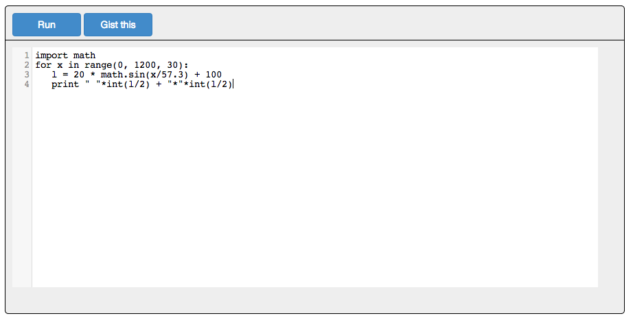

This project transforms O'Reilly Atlas markup like this:
<pre data-executable="true" data-language="python"> import math for x in range(0, 1200, 30): l = 20 * math.sin(x/57.3) + 50 print " "*int(l/2) + "*"*int(l/2) </pre>
Into a browser plugin where you can run the code, like this:

The plugin provides:
These will allow you to:
Many thanks for Geert Kapteijns awesome post Interactive Ruby in the browser for showing how to put JSREPL and JQ-CONSOLE together.
<pre data-executable="true" data-language="python"> import math for x in range(0, 1200, 30): l = 20 * math.sin(x/57.3) + 50 print " "*int(l/2) + "*"*int(l/2) </pre>To see it, wait for the interpreter to load and then press "Run".
import math for x in range(0, 1200, 30): l = 20 * math.sin(x/57.3) + 50 print " "*int(l/2) + "*"*int(l/2)
<pre data-executable="true" data-language="python">
def triangle(n):
if n == 0:
return []
elif n == 1:
return [[1]]
else:
new_row = [1]
result = triangle(n-1)
last_row = result[-1]
for i in range(len(last_row)-1):
new_row.append(last_row[i] + last_row[i+1])
new_row += [1]
result.append(new_row)
return result
def pascal(n):
for row in triangle(n):
print('{0:^120}'.format(row))
</pre>
In this example, you hit "Run" and two functions get define. You can then run them on the console by typing triangle(10) to get back a python object, or do pascal(10) to get a pretty printed version.
def triangle(n):
if n == 0:
return []
elif n == 1:
return [[1]]
else:
new_row = [1]
result = triangle(n-1)
last_row = result[-1]
for i in range(len(last_row)-1):
new_row.append(last_row[i] + last_row[i+1])
new_row += [1]
result.append(new_row)
return result
def pascal(n):
for row in triangle(n):
print('{0:^120}'.format(row))
puts "Enter A" a = gets.chomp puts "Enter B" b = gets.chomp puts "The answer is " c = Integer(a) + Integer(b) puts c
puts "Enter A" a = gets.chomp puts "Enter B" b = gets.chomp puts "The answer is " c = Integer(a) + Integer(b) puts c